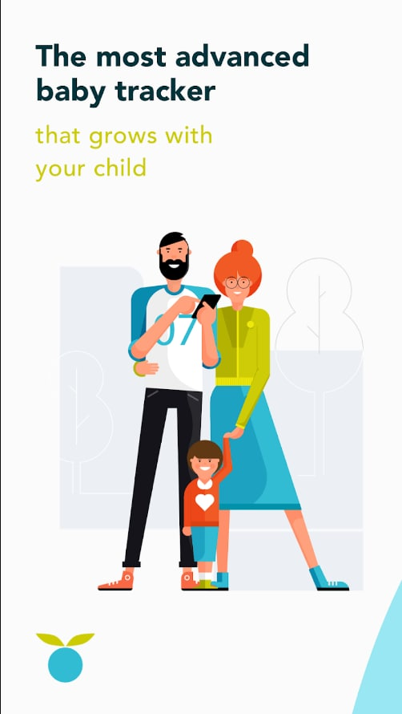

Open to opportunities
Hi, I'm Uliana-Olena
Data & Backend QA Engineer who breaks things before users do.
6 years making data-heavy and backend systems trustworthy — across cybersecurity, healthcare, and large-scale data migrations. I work in an AI-augmented way: design the validation logic, let AI implement it fast, and verify it myself.
$ running test suite...
✓ API integration tests passed
✓ Source ↔ target data matched
✓ 200+ tables migration verified
✓ 0 data discrepancies left open
$ _
About Me
Quality is not an act, it's a habit.
I'm a QA Engineer who sees testing as detective work — but my crime scene is the data. I make sure it stays accurate and consistent as it moves: source-to-target migration testing, schema-mapping analysis, and multi-database root-cause analysis.
My playground? Backend systems, API integrations, and complex data flows across cybersecurity, healthcare, and large-scale migrations — industries where "it works on my machine" isn't good enough.
I lean on AI to move faster, but I design the logic and verify every result myself — knowing where the model is wrong is the actual engineering. Bachelor's in Automation from Lviv Polytechnic; currently extending into Python test automation.
Skills & Tools
My Testing Arsenal
Quality Control
- Test Design & Execution
- Requirement Analysis
- Defect Management
- AI-Assisted QA Workflows
API & Data
- Postman & Fiddler
- REST API Testing
- Source-to-Target Validation
- Data Migration & ETL Testing
- Log Analysis & Root-Cause
Databases
- PostgreSQL & SQL Server
- MongoDB & Redis
- BigQuery & Snowflake
- Elasticsearch
Tools & Platforms
- Jira & TestRail
- Xcode & Android Studio
- BrowserStack & VMware
- Chrome DevTools
Experience
Where I've Made Impact
Project: Cycle — large-scale data migration
- Designed & built (AI-assisted) a Python data-mapping tool that turns ~a week of manual mapping investigation into a 5-minute report
- Recreated the full mapping & transformation logic from scratch for a 200+ table legacy-to-new migration
- Source-vs-target validation: data accuracy, completeness, discrepancy investigation against business rules
- AI-assisted schema-mapping analysis & SQL validation — kept reviewable and reproducible
Project: Morphisec — Israeli cybersecurity platform
- Validating system stability across multiple databases and complex data flows
- Security-oriented testing: identifying vulnerabilities, validating protection mechanisms
- API testing with Postman, automated flows, and feature flag verification
- Root-cause analysis and log verification across environments
Project: Huckleberry — multi-platform product (iOS, Android, Web)
- Backend testing: API integrations, data consistency, server logic validation
- Tested major integrations — Stripe (payments), Amplitude (analytics) — and the migration to a serverless backend
- Verified behavior under feature flags across environments; collaborated with a USA-based product team
- Ensured release quality for thousands of end users
Canadian digital healthcare platform
- Compliance testing for governmental healthcare regulations
- Data security and user privacy validation
Early-career foundation across multiple product types
- Full QA cycle ownership: from requirement analysis to release validation
- Test design, defect reporting, regression and release testing
- Built core QA discipline: clear documentation and dev/product communication
Projects
Products I've Helped Ship
Morphisec
Enterprise endpoint protection platform using Moving Target Defense technology. Stops zero-day threats, fileless attacks, and ransomware before they execute.
My focus: System integrity validation, security testing, database consistency, and log verification across complex workflows.
Visit Morphisec →
Huckleberry
Sleep tracking app helping thousands of parents worldwide. Available on iOS, Android, and Web — like having a sleep consultant in your pocket.
My focus: Backend testing, API integrations, data consistency validation, and ensuring release quality for thousands of end users.
Visit Huckleberry →Things I've Built
🛰️ QA Context Radar
An AI-assisted tool that scores a product ticket's readiness for testing before test design — two deterministic signals (Completeness vs Substance) plus an AI brief.
More than an AI wrapper: an eval suite that measures where the AI analysis is grounded vs invented — I tested my own AI.
View on GitHub →📡 QA Job Radar
A scheduled scraper that collects fresh QA postings, scores each one against my profile with an LLM, and sends a filtered daily digest of only the relevant ones.
Why: to make my own job hunt less manual — and as a working portfolio piece that shows I automate my own workflows.
Code walkthrough on requestGet In Touch
Let's Build Something Reliable
Looking for a QA engineer who treats your product like it's their own? I'm currently exploring new opportunities and would love to hear about your project.
Say Hello